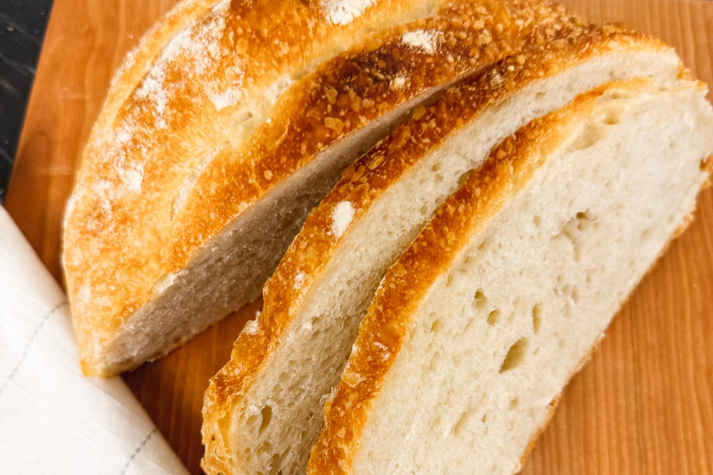

She’s the Goose

The Basic Series · No. III · The Foundation
A little whole wheat for flavor, a teaspoon of olive oil, and a night in the refrigerator. A crisp, deeply browned crust over a soft, chewy crumb.
The refrigerator does most of the work here. The long, cold rest builds the flavor and firms the dough, so it scores cleanly and holds its shape in the oven. Plan on 18 to 24 hours from mixing to baking, nearly all of it hands-off.
For the loaf
Mix the dough. Stir the starter into the water until mostly dissolved. Add both flours and mix until a shaggy dough forms. Cover and rest 30 minutes. Add the salt and olive oil, and squeeze and fold them through the dough with damp hands until fully incorporated.
Stretch and fold. Over the next 2 hours, do four sets of stretch-and-folds about 30 minutes apart. Lift one side of the dough, stretch it upward, and fold it toward the center. Turn the bowl and repeat on all four sides. With each set, the dough becomes smoother and stronger.
Let it rise. Cover and leave at room temperature until the dough is noticeably puffy, with small bubbles at the edges and 50 to 75% growth. At 72 to 75°F, this usually takes 5 to 8 hours from the first mix. Your starter and your kitchen set the pace, not the clock.
Shape. Turn the dough onto a lightly floured surface, shape it loosely into a round, and rest 20 minutes. Shape it again, drawing the surface tight, and set it seam-side up in a floured banneton or towel-lined bowl.
Refrigerate overnight. Cover and refrigerate 10 to 16 hours.
Bake. Put a Dutch oven in the oven and preheat to 475°F for 40 to 45 minutes. Turn the cold dough onto parchment, score it with a sharp blade, and lower it into the hot pot. Reduce the oven to 450°F and bake covered for 20 minutes. Remove the lid, lower the oven to 425°F, and bake 15 to 20 minutes more, until the crust is as dark as you like it.
Cool. Cool on a wire rack at least 2 hours before slicing.
Use your starter at its peak: bubbly, well risen, and just about to fall. A sluggish starter is the most common reason for a dense loaf.
In a cool kitchen, give the rise more time rather than moving on early.
Don’t cut it warm. The crumb is still setting as it cools, and slicing too soon leaves it gummy.
Let the crust go deeper than feels safe. Much of the bread’s flavor is in that color.